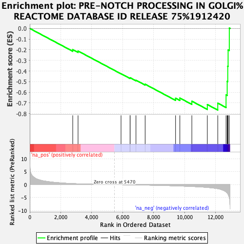

| | | Dataset | ER_ranked_genelist |
| Phenotype | NoPhenotypeAvailable |
| Upregulated in class | na_neg |
| GeneSet | PRE-NOTCH PROCESSING IN GOLGI%REACTOME DATABASE ID RELEASE 75%1912420 |
| Enrichment Score (ES) | -0.76717526 |
| Normalized Enrichment Score (NES) | -1.851049 |
| Nominal p-value | 0.0 |
| FDR q-value | 0.05783989 |
| FWER p-Value | 0.64 |
Table: GSEA Results Summary

Fig 1: Enrichment plot: PRE-NOTCH PROCESSING IN GOLGI%REACTOME DATABASE ID RELEASE 75%1912420
Profile of the Running ES Score & Positions of GeneSet Members on the Rank Ordered List
Fig 2: PRE-NOTCH PROCESSING IN GOLGI%REACTOME DATABASE ID RELEASE 75%1912420: Random ES distribution
Gene set null distribution of ES for PRE-NOTCH PROCESSING IN GOLGI%REACTOME DATABASE ID RELEASE 75%1912420